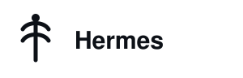
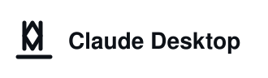
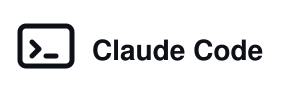
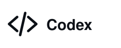

AugmentiQ gives your agent a memory that lives in your Obsidian vault — readable Markdown, classified records, and a tamper-evident audit trail. Nothing leaves your machine.
Works with the agents you already run




Ask an agent to research a market and you get a paragraph. Not because it can't go deeper — because it has nowhere to put what it finds. Every session starts cold, so depth costs tokens, and shallow is the rational choice.
| Without AugmentiQ | With AugmentiQ |
|---|---|
| One prompt, one answer | A swarm of agents, each appending findings |
| Findings die with the session | Findings land in your vault as structured Markdown |
| You re-explain context every time | The agent recalls it and resumes where you stopped |
| Output is a wall of chat text | Output is a document tree you can review and diff |
| You can't tell what it knew, or when | Every write is timestamped and hash-chained |
Three pieces. One of them is the product; the other two connect it to your agent.
An Obsidian plugin with an embedded MCP server. Enabling it starts a server on 127.0.0.1:3710 and creates the memory store inside your vault. Ten tools, bearer auth, read-only mode.
Six native tools for OpenClaw (and a portable skill for Hermes, Claude, Codex, Cursor). Same operations, no shelling out, typed errors.
The agent queries memory at session start instead of starting cold.
It applies what it found — deductively, inductively, abductively — without narrating it.
The answer is informed by memory, not decorated with it.
Three to five typed memories per session: observation, conclusion, preference, instruction, summary.
Weekly and non-destructive: duplicates, contradictions and stale beliefs surface for you to decide on.
Retrieval finds text. Memory forms beliefs. Those are different problems, and the difference shows up the first time you ask what the agent believed last month.
| Capability | RAG / vector DB | ChatGPT memory | Cloud memory APIs | AugmentiQ |
|---|---|---|---|---|
| Data stays on your machine | ✗ | ✗ | ✗ | ✓ |
| Survives model changes | ✓ | ✗ | ✓ | ✓ |
| Classification + retention | ✗ | ✗ | partial | ✓ |
| Tamper-evident audit trail | ✗ | ✗ | partial | ✓ |
| Bi-temporal (knew it when?) | ✗ | ✗ | rare | ✓ |
| Readable, diffable storage | ✗ | ✗ | ✗ | ✓ |
| No vendor lock-in | varies | ✗ | ✗ | ✓ |
| Managed, multi-user, zero-ops | varies | ✓ | ✓ | roadmap |
Where AugmentiQ is weaker: cloud memory APIs already handle multi-user orgs and require no local setup. If you want zero-ops and don't care where data lives, they are the better answer — we say so plainly.
Three steps. No Docker, no daemon, no cloud account.
# 1 — the memory: Obsidian → Community plugins → AugmentiQ → Enable # then copy the token from the ribbon icon # 2 — the tools openclaw plugins install clawhub:upsurge/augmentiq # paste the token when prompted # 3 — the judgement layer openclaw skills install augmentiq
Using Hermes, Claude Desktop, Claude Code, Codex or Cursor instead? Each has a one-page guide in the repo.
The plugin and skill are free, MIT, and fully functional — no paid tier hiding behind them. We charge organisations for governance guarantees and someone accountable for the deployment.
No. The server binds 127.0.0.1 only, there is no telemetry, and the store is a file in your vault. The only outbound traffic is what your agent already sends to its model provider.
Memory is unavailable, because the server lives inside the app. This is a real limitation and we state it rather than hide it. Desktop only, as of v0.1.
Yes — that is what the hash chain is for. Every state change appends a SHA-256 chained entry, and verification is a served operation rather than a claim. It answers one question: did the agent know this before it made that recommendation?
No. Records are plain JSON lines and Markdown in your vault. If you stop using AugmentiQ tomorrow, your memory is still there, readable in Obsidian or any text editor.
RAG retrieves passages. AugmentiQ records beliefs with dates, sources, classifications and a revision history. Retrieval helps an agent answer; memory changes what it assumes before it starts.
Mobile Obsidian, multi-user org tiers, and the enterprise Docker backend. Each has a designated version. We would rather list them than discover them during your pilot.
Five minutes to install. Free for personal use. Yours to audit.